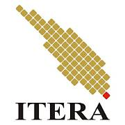

Dosen Teknik Informatika ITERA Terpilih Sebagai Dekan Fakultas Teknologi Industri Periode 2026–2030
12 September 2026
Dosen Teknik Informatika ITERA terpilih sebagai Dekan Fakultas Teknologi Industri untuk periode 2026–2030.

Institut Teknologi Sumatera
Program Studi Teknik Informatika ITERA merupakan salah satu program studi di Institut Teknologi Sumatera (ITERA) yang berfokus pada bidang computer science dan software engineering. Program studi ini mempelajari berbagai bidang seperti algoritma dan pemrograman, sistem komputer, basis data, rekayasa perangkat lunak, keamanan, serta intelligent system. Mahasiswa juga dilatih untuk menganalisis permasalahan dan mengembangkan solusi perangkat lunak, baik untuk kebutuhan sederhana maupun sistem berskala besar.
| Bagian | Keterangan |
|---|---|
| Visi | Menjadi Program Studi Teknik Informatika terkemuka dan unggul di bidang teknologi informasi berbasis intelligent system, untuk pengembangan potensi di Pulau Sumatera dan Indonesia pada umumnya. |
| Misi |
|
12 September 2026
Dosen Teknik Informatika ITERA terpilih sebagai Dekan Fakultas Teknologi Industri untuk periode 2026–2030.
28 Agustus 2026
Program Studi Teknik Informatika ITERA terus meningkatkan kompetensi mahasiswa melalui pengembangan teknologi dan kegiatan riset.
Kontak : 07218030188
Email : informatika@itera.ac.id
Lokasi : Ruang D215 - Gedung D Kampus ITERA